Zennの「Test」のフィード
フィード
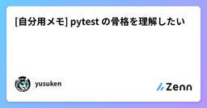
[自分用メモ] pytest の骨格を理解したい
Zennの「Test」のフィード
自分用のメモですAPI のテストフォルダを開くと、conftest.py と test_*.py が並んでいます。フィーチャーテストという言葉は聞いたことがあっても、いま見ているファイルが何のスタックの上で、何を書いて、何を通しているのかが先に揃っていないと、後半の fixture や yield が浮きます。この記事では、よくある API プロジェクトを架空の構成で置いたあと、フィーチャーテストの位置づけを整理し、pytest がそれをどう実行するかを人に渡せる粒度まで落とします。コードはすべて架空です。想定読了時間は 10〜15 分です。 前提：スタック、構成、書いている...
5時間前
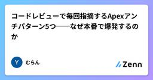
コードレビューで毎回指摘するApexアンチパターン5つ──なぜ本番で爆発するのか
Zennの「Test」のフィード
アンチパターンと本番障害は表裏一体結論から言うと、コードレビューで指摘される項目のほとんどは「可読性」や「お作法」の話ではありません。「これを放置すると本番でオンコールが鳴る」という話です。レビューを受ける側になると、指摘が細かく感じる瞬間がある。「動いてるのに何がダメなんだ」と。その感覚は、指摘の先にある障害シナリオが見えていないだけ、というケースがほとんど。逆に言えば、シナリオが見えていれば指摘は納得できるし、次からは自分で気づけるようになる。ここで挙げる5つは、私がこれまで中規模（数百ユーザー）環境で実際にオンコール対応やデバッグで踏み抜いたものに絞っています。一般的なア...
6時間前

Jestの使い方を基礎から学ぶ｜導入・テスト・モック・カバレッジ
Zennの「Test」のフィード
はじめにJestは、JavaScript向けのテストフレームワークです。テストの実行、結果の比較、モック、カバレッジ計測など、単体テストに必要な機能がまとまっています。この記事では、Jestを初めて使う人に向けて、次の内容を順番に解説します。Jestの導入と最初のテストよく使うマッチャーテストの整理と前後処理例外、非同期処理のテストモック関数の使い方カバレッジの確認方法テストを書くときの考え方サンプルはNode.jsとnpmがインストール済みの環境を前提とし、設定の少ないCommonJS形式で記述します。 JestとはJestでは、テストコードを次のよう...
7時間前
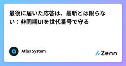
最後に届いた応答は、最新とは限らない：非同期UIを世代番号で守る
Zennの「Test」のフィード
一覧でAを選び、すぐにBへ切り替える。Bの情報が表示されたあと、遅れて届いたAの応答が画面を上書きする。通信そのものは成功していても、利用者は間違った対象の情報を見ることになります。残高や履歴を見せるWeb3のUIでも、一般的な検索画面でも起こり得る問題です。本稿ではネットワークを使わず、応答順序を手動で逆転させるテストで、対策の中心となる考え方を確かめます。 「最後に開始した操作」だけに表示を許可する表示の権利を応答の到着順に渡さず、リクエストを開始するときに番号を付けます。結果を反映する直前に、まだ最新の番号かを確認します。次のコードをlatest.mjsへ保存してください...
16時間前
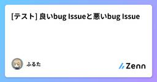
[テスト] 良いbug Issueと悪いbug Issue
Zennの「Test」のフィード
🌱 はじめに2026年8月27日に発売された『QAエンジニア入門 〜チームで品質を高める連携のしかた』（岩崎 駿 著）を読みました。bug Issueについて素敵な内容が書かれていたため、備忘録として残します。https://gihyo.jp/book/2026/978-4-297-15832-3自分のためではなく、チームのためのbug Issueだったのでまとめます。また、自分の経験も併せて記載します。 🌱 結論bug Issueには、下記の要素があると良いと思います。!事象再現率再現手順実際の結果期待する結果環境情報ユーザー影響添付資料タイ...
16時間前
テストを制する者は実装を制す
Zennの「Test」のフィード
AIに頼めば、コードは出てくる。しかも速い。人間がコーヒーを一口飲んでいる間に、AIはいくつもファイルと関数を増やし、頼んでいない抽象化まで済ませている。問題は、そのコードが正しいかどうかである。画面が表示された。エラーが出ない。AIも「実装が完了しました」と言っている。しかし、「動いた」は「正しい」と同じではない。何をもって正しいとするのか。その基準がなければ、AIはゴールの位置を知らないまま、ものすごい勢いでシュートを打ち続ける。入ったかどうかを判定する人はいない。得点板もない。それでもAIは爽やかに報告する。「正常に実装できました」何を見て言ったんだい...？...
18時間前

AIと帳票デザイナを作った25日（5）プレビューとPDFが一致しない
Zennの「Test」のフィード
このプロジェクトで一番長く戦ったのは、機能追加ではなく 「同じテンプレートから、ブラウザのプレビューとサーバの PDF が別のものを出す」 という問題でした。対応した Issue は 40 件を超え、7 月 16 日から 7 月 23 日まで断続的に続いています。今回はその 8 日間の記録です。 1. 24 要素中 18 種が、無警告で空だったこの Epic は、7 月 16 日の朝 5 時に打った 1 行から始まっています。この配下のコードをレビューし、レポートをデザインし、帳票を出力するエンジンを作るための Issue を作成してください。返ってきたのが Epi...
19時間前
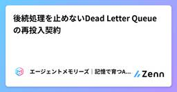
後続処理を止めないDead Letter Queueの再投入契約
Zennの「Test」のフィード
はじめに一件の不正payloadでconsumerが毎回停止すると、その後ろにある正常な仕事まで処理できません。例外を握りつぶしてskipすると、今度は失敗した一件が消えます。Dead Letter Queue（DLQ）はこの二択を避け、処理不能なitemを証拠付きで隔離する仕組みです。ただし、DLQへ移しただけでは復旧していません。なぜ失敗したか、再投入できる条件は何か、元の順序を守る必要があるか、重複をどう防ぐか、成功を何で確認するかまで契約化する必要があります。この記事ではPythonのqueue worker、dead letter schema、dependenc...
1日前
フォームのテストで使う「実在しない住所」をCSVでまとめて作れるようにしました
Zennの「Test」のフィード
はじめに以前、テスト用のダミーファイルをブラウザだけで生成できるツールを作った話を書きましたが、今回はそこに新しく「住所」タブを追加しました。フォームやDBのテストをしていると、住所欄に何を入れるか地味に悩みませんか？ 実在の住所を使うのは気が引けるし、かといって適当な文字列だとバリデーションに引っかかることもある。「それっぽい形式だけど、絶対に実在しない住所」を、まとめて欲しい時に使えるツールを作りました。https://www.testfilemaker.com/ できること都道府県は実在のものを使用します(フォームの都道府県プルダウンのテストなどにも対応できるよ...
2日前
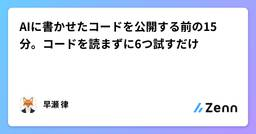
AIに書かせたコードを公開する前の15分。コードを読まずに6つ試すだけ
Zennの「Test」のフィード
AIに書かせたコードは、たいてい一度は動きます。問題は、その一度が「たまたま」だったときに気づけないことです。読んで探そうとすると時間がかかるうえ、短くて素直なコードほど問題が見えません。この記事では、コードを読まずに、動かすだけで済む6項目を出します。実際に集計ツールを1本作らせて当ててみたところ、6項目のうち4項目で問題が出ました。その出力もそのまま載せます。所要は15分です。 6項目#確かめることやり方1普通に動くか想定どおりの入力で動かし、出てきた数字を目で見る22回目同じコマンドをもう一度動かす3空0件・空のファイルを渡...
2日前
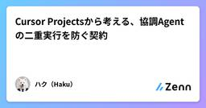
Cursor Projectsから考える、協調Agentの二重実行を防ぐ契約
Zennの「Test」のフィード
TL;DRCursor Projects の「数千の subagent」を、並列数ではなくジョブ整合性の問題として読みました。idempotency key、lease token、attempt budget の 3 つで、二重取得と古い結果の上書きを防ぎます。Node.js v24.19.0 で異常系を 5 件実行し、すべて pass しました。 はじめに数千のエージェントを動かせても、一つの古い結果が後から戻れば、リポジトリは壊れます。2026 年 9 月 10 日に発表された Cursor Projects の coordinator と subagent...
2日前
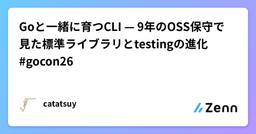
Goと一緒に育つCLI — 9年のOSS保守で見た標準ライブラリとtestingの進化 #gocon26 21
21
Zennの「Test」のフィード
Go Conference 2026 自己紹介金子達哉 / catatsuy株式会社PR TIMES CTO『達人が教えるWebパフォーマンスチューニング』共著者Podcast「八百万のOSS」のホスト色々なOSSの設計・実装・運用を深掘りしているhttps://yaoyorozu-oss.henteko07.com/ notify_slackhttps://github.com/catatsuy/notify_slackcommandの出力を標準入力から受け取るCLIterminalにはそのまま出力Slackには一定時間ごとにまとめ...
2日前
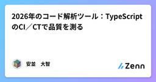
2026年のコード解析ツール：TypeScriptのCI／CTで品質を測る
Zennの「Test」のフィード
対象読者は、TypeScript／JavaScriptのWebアプリ・Node.js APIでCIを運用し、テストの合否やカバレッジに加えて、改善対象を判断する指標が欲しい開発者である。GitHub ActionsとVitestを使う構成を実測の前提にする。2026年9月時点のツールについて、文・分岐網羅率、テストの検出力、変更が集中するコードの分析を扱う。API仕様の検証にはOpenAPIを前提とするSchemathesis、結果の可視化にはJUnitを入力とするAllureなどを取り上げる。API検証と結果集約は、対象アプリの実装言語とは別の軸である。 TDDが決めること、決め...
2日前

AIのテスト観点を「決定論的」にする - テスト観点カタログを作った
Zennの「Test」のフィード
こんにちは！株式会社 Aldagramで業務委託QAをしている宮下です！前回は、Claude Code 上で QA プロセスを回す AI エージェント「qa-orchestrator」を作った話を書きました。https://zenn.dev/aldagram_tech/articles/4aea4b13671ae3今回はその続きになります。qa-orchestrator を運用してみて、いちばん気になっていたのが「仕様書に書かれていない振る舞いの観点が抜ける」ことでした。これに対して、テスト観点カタログという仕組みを考え少しずつ運用を始めているので、何を考えてどう作ったか、そして...
2日前
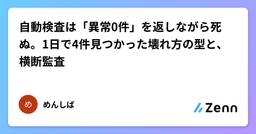
自動検査は「異常0件」を返しながら死ぬ。1日で4件見つかった壊れ方の型と、横断監査
Zennの「Test」のフィード
この記事でわかること「わざと壊して確かめた」検知でも、その後で静かに死ぬこと。同じ日に4件見つかった実例壊れ方は4つの型に分かれる: 正規表現の置き去り / 判定の複製 / 固定文字列の状態 / 本番環境の依存欠如それぞれ「症状 → なぜ気づけなかったか → 検知できる設計」個別に直すのではなく、各検査が「最後に成功データを返した日時」を横断で見る監査に落とすまで 前提個人ブログの運用を Claude Code と Codex を組み合わせた自作パイプラインで半自動化しています。launchd の定期ジョブと Python スクリプトの集まりで、大した技術は使ってい...
2日前
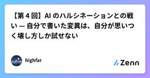
【第 4 回】AI のハルシネーションとの戦い — 自分で書いた変異は、自分が思いつく壊し方しか試せない
Zennの「Test」のフィード
第 4 回（末尾に連載の一覧があります）前回、証明が空洞でないことを確かめる手段としてミューテーションを置きました。実装だけを壊して、証明が落ちるかを見る。落ちれば、その証明は何かを守っています。今回は、そのミューテーション自体が空虚になった話です。しかも同じ形で複数回踏みました。 発端: 自己検証したつもりだった既存 DB を壊さずに列を追加してよいかを判定する述語を書いたときのことです。実装役は、自分の証明が空洞でないことを示すために 3 つの変異を当てて、3 つとも CAUGHT であることを確認しました。off-by-one を入れる矛盾チェックを外すオーバ...
2日前
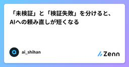
「未検証」と「検証失敗」を分けると、AIへの頼み直しが短くなる
Zennの「Test」のフィード
「まだ確認できていません」と「確認したら動きませんでした」。どちらも完了ではありませんが、次に頼む仕事は違います。前者に必要なのは確認です。後者には、失敗した箇所の修正を頼みます。この二つを同じ「確認待ち」に入れると、直す必要があるものに、もう一度確認だけを頼んでしまいます。AIに開発を任せるときも、ここを分けておくと依頼が短くなるはずです。大きな管理システムの話ではありません。完了報告に、結果を一行足すところから始められます。 作業が終わったことと、要求を満たしたことたとえば、CSVを読み込んで集計する小さなツールを頼んだとします。以下は説明用の架空の例です。担当から「実装...
2日前
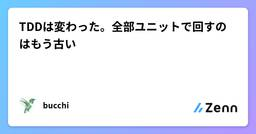
TDDは変わった。全部ユニットで回すのはもう古い
Zennの「Test」のフィード
はじめに「TDD って、全部ユニットテストを先に書くやつでしょ」そう覚えている人、多いです。半分だけ合っています。TDD（テスト駆動開発）の核はこれです。失敗する例を先に書く。通す。整える。ここは今も生きています。古くなったのは「それを全部ユニットテストで回す」ほうです。形のチェックは、型と LSP が持っていきました。 TDD が本当にやりたかったことRed-Green-Refactor は3手です。Red: 欲しい振る舞いの、失敗する例を書くGreen: それを通す最小の実装を書くRefactor: 例が通ったまま、形を整えるテストの山を積むのが目的じゃ...
3日前
[AI] 何をQAするのか
Zennの「Test」のフィード
🌱 はじめに2026年8月27日に発売された『QAエンジニア入門 〜チームで品質を高める連携のしかた』（岩崎 駿 著）を読みました。AIのQA（品質保証）に関する記述もあったため、備忘録として残します。https://gihyo.jp/book/2026/978-4-297-15832-3最近は、AIを組み込んだシステムも多くなりました。AIの品質をどのような観点で担保すればよいかを、重点的にまとめます。説明が具体的になるよう社内ヘルプデスクAI（社内規程や手続きの問い合わせに回答する社内向けチャット）を題材にします。!各観点の引用は、すべて本書からの抜粋です...
3日前
AI駆動開発を速くするために、AIを信頼できる仕組みを作った話
Zennの「Test」のフィード
はじめに新しいプロジェクトを始めるたびに、コードを書く前の準備だけでかなり時間を取られます。要件を整理して、雛形を作って、CIを整えて、テスト環境を用意する。「ちょっと試してみたいだけ」なのに、気づけば準備だけで1日が終わっていることもありました。仕事でも個人開発でもコーディングエージェントを毎日使う中で、ここもまとめて任せられないかと思い、新規プロジェクトの立ち上げを丸ごと自動化するスキルを作りました。これを使うようになってから、仕事の試作でも個人のアイデアでも、思いついたその日に動くものが手元にあるところまで一気に持っていけるようになりました。この記事では、このスキルをどん...
3日前